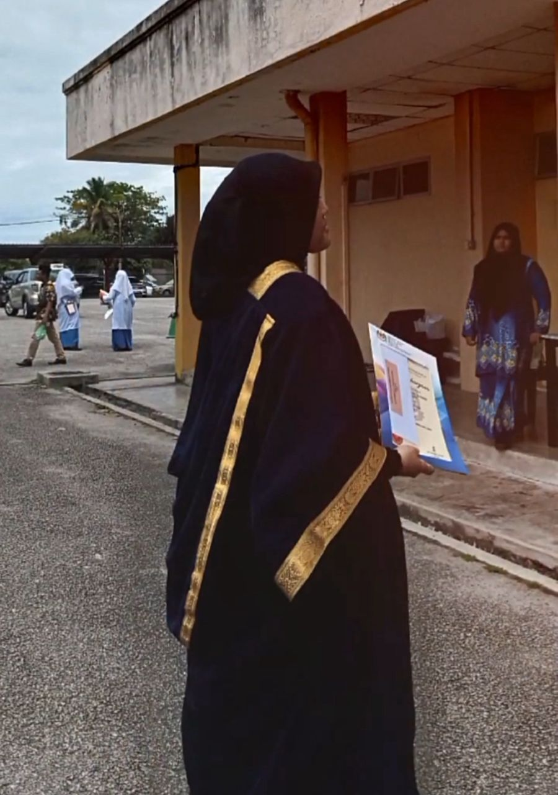
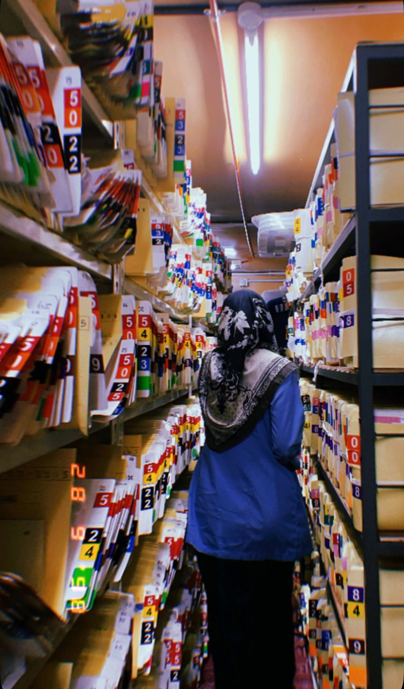

HI, I'M SALIHA NAJWA👋
I am someone with a big dream to bring positive change to the world. I believe in doing good, serving people, and creating impact through leadership, compassion, and action. My life is driven by a strong desire to uplift others, build meaningful projects, and inspire hope wherever I go. I am growing into a woman who wants to leave a mark that matters, powered by sincerity, courage, and a heart that never stops dreaming.

MY EDUCATION 🎓
Education began at Sekolah Kebangsaan Sungai Korok, followed by secondary studies at Sekolah Menengah Kebangsaan Seri Balik Pulau. The journey then continued to Universiti Teknologi Mara (UiTM) Merbok, where the final year of the Diploma in Information Management is currently being completed.

INTERNSHIP JOURNEY 🖊️
The internship is currently being completed at Hospital Balik Pulau within the Medical Records Department. The role involves supporting daily record management tasks, assisting with filing and documentation, and observing the operations of medical record handling in a hospital setting. This experience reflects a strong interest in hospital work and a genuine motivation to build a future career within the healthcare environment.
